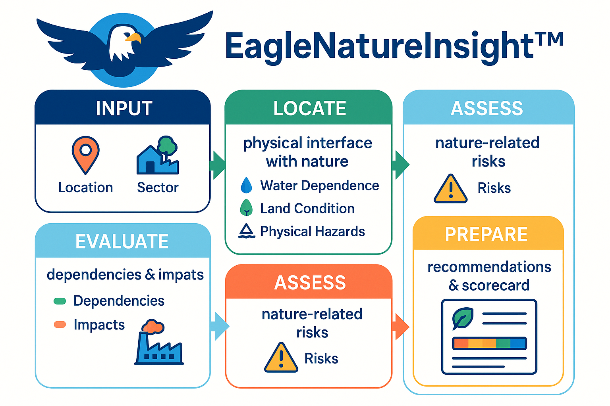

TNFD-aligned nature intelligence that turns satellite Earth-observation data into simple, 5-minute risk scorecards for SMEs and supply chains.
EagleNatureInsight™ is a lightweight, cross-sector nature intelligence service built on SpaceEagle's geospatial stack. It helps small and medium enterprises understand how their operations depend on and impact nature, and produces practical recommendations they can act on today.
Enter your business location, select your sector, and optionally add multiple sites. The platform handles the rest.
EagleNatureInsight™ combines Earth-observation, hazard, and contextual data to identify key dependencies, impacts, and nature-related risks.
Receive a clear, LEAP-aligned scorecard and recommended actions that you can share with buyers, financiers, or regulators.
EagleNatureInsight™ is currently in an advanced prototype phase. We are partnering with anchor customers, development partners, and SME networks to run pilots and co-design sector-specific modules.
If you are interested in piloting EagleNatureInsight™ or integrating it into your ESG and risk processes, please contact us.